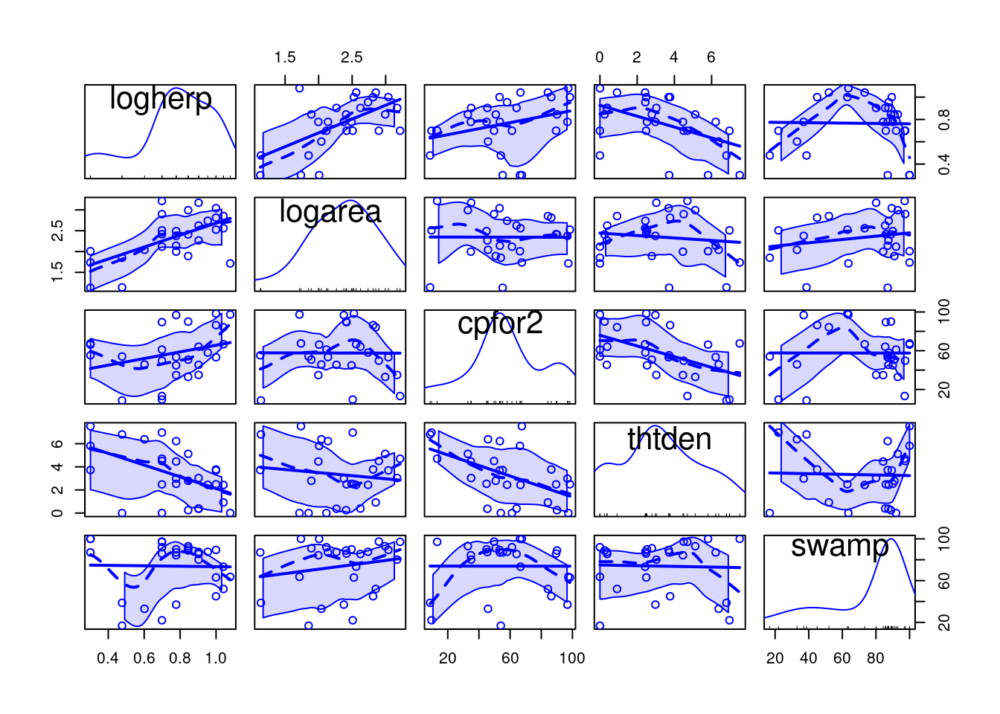
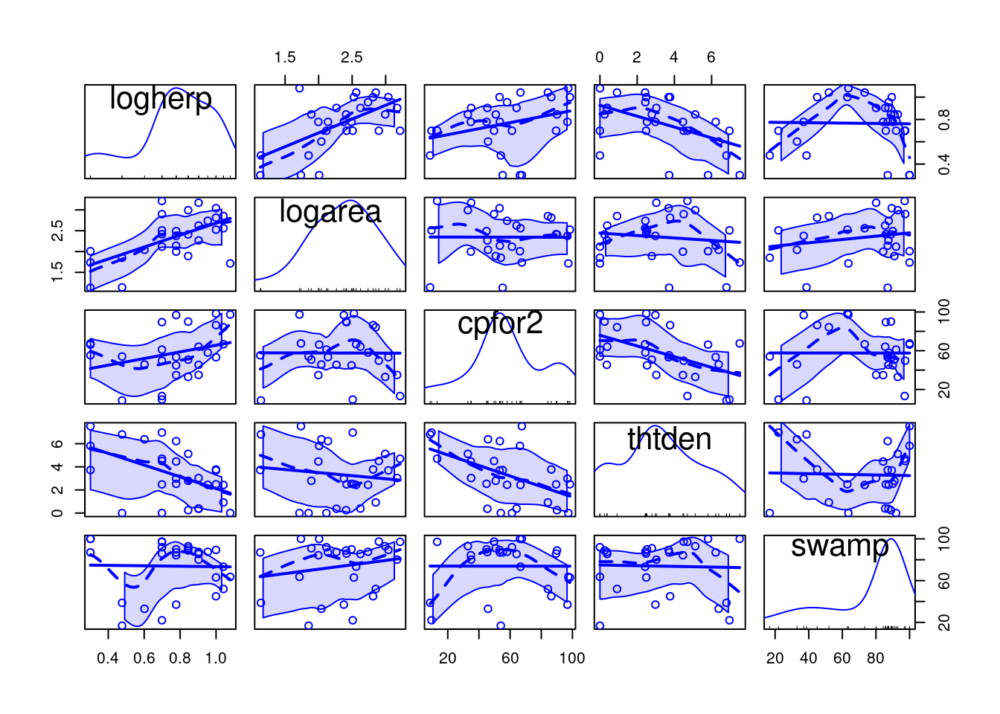
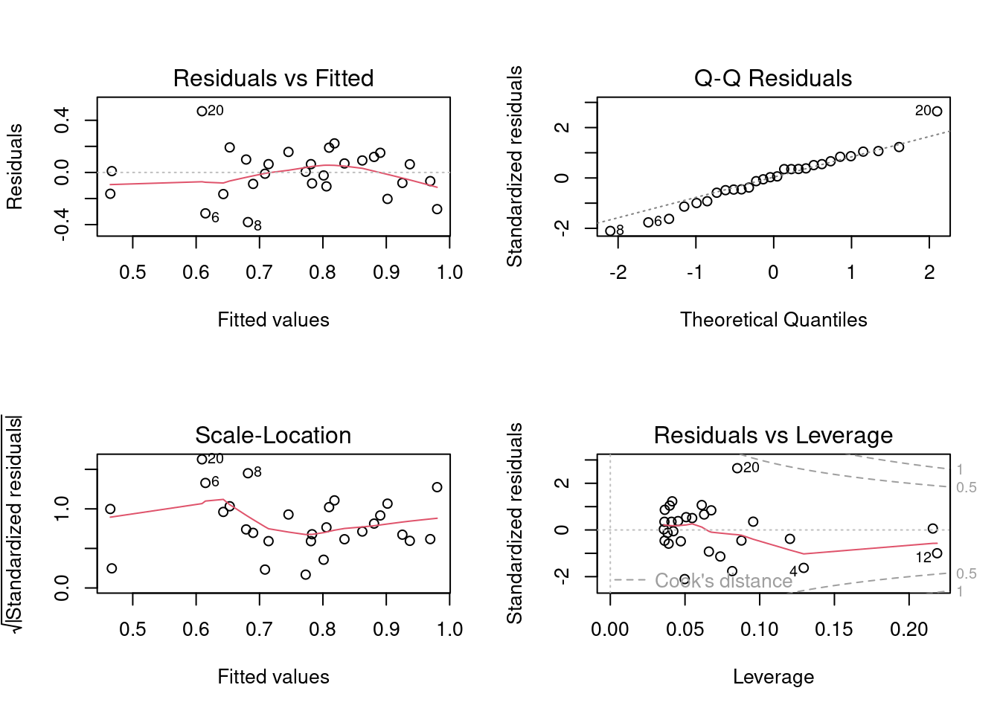
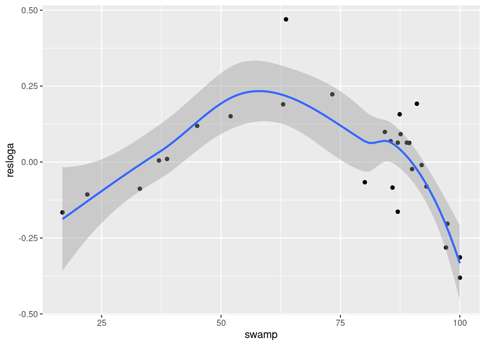
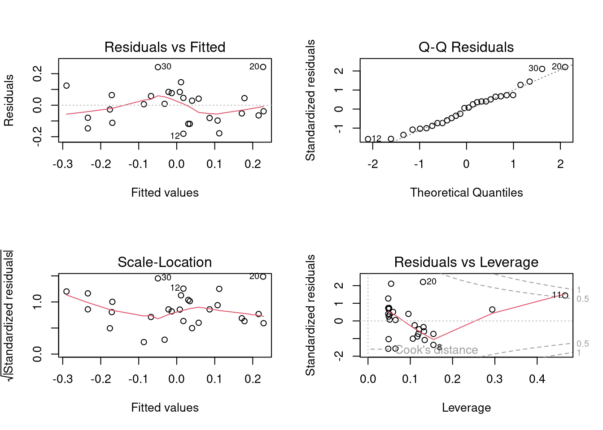
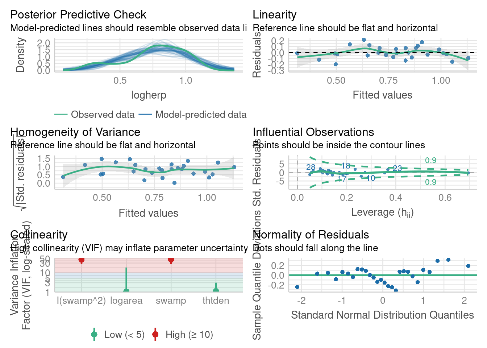
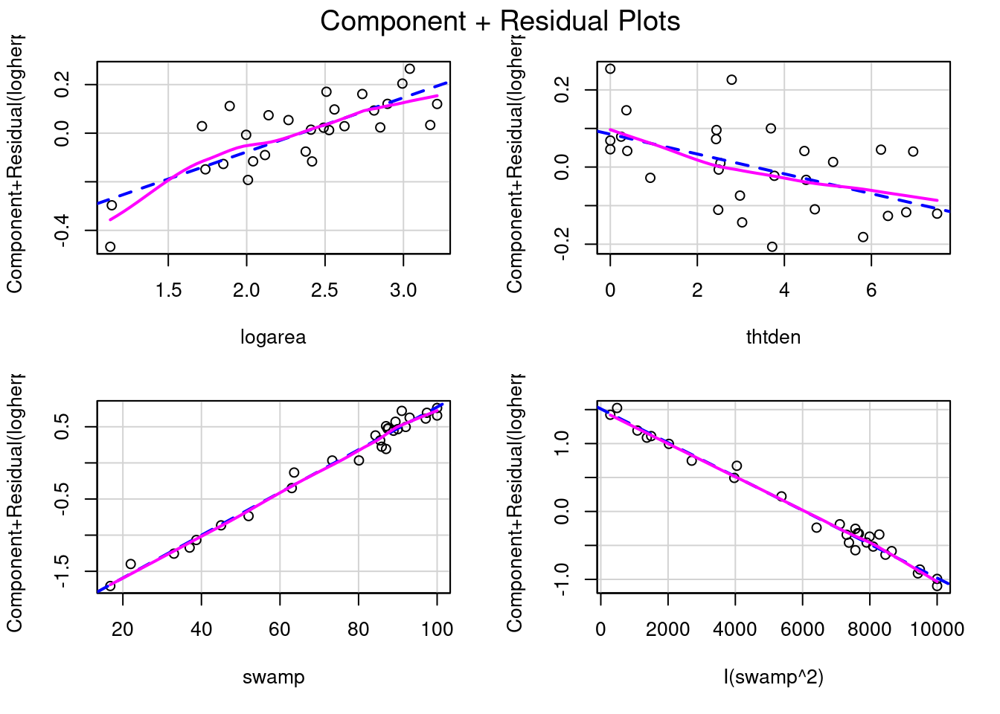
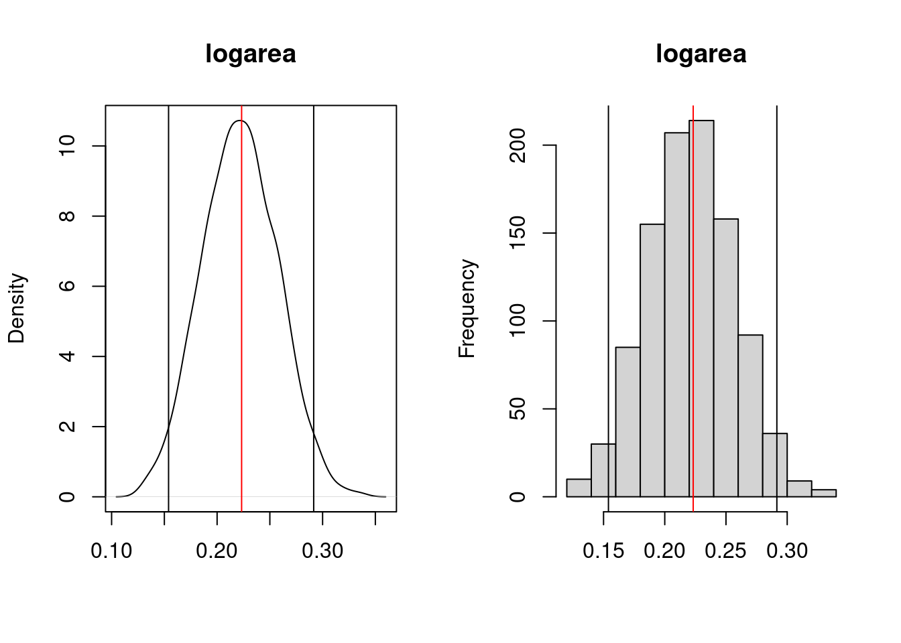
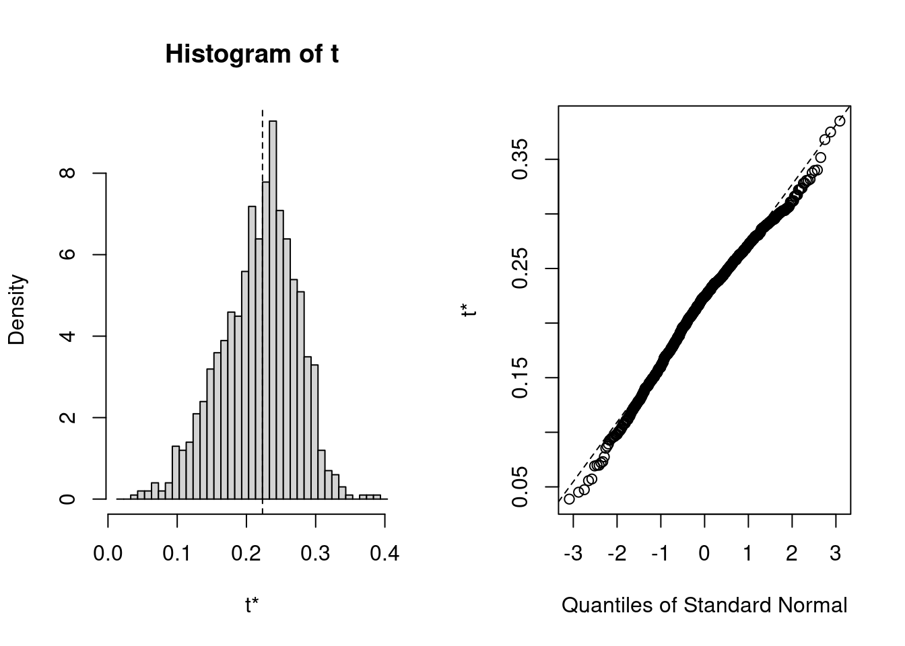

mydata <- read.csv("data/Mregdat.csv")
scatterplotMatrix(
~ logherp + logarea + cpfor2 + thtden + swamp,
regLine = TRUE, smooth = TRUE, diagonal = TRUE,
data = mydata
)
After completing this laboratory exercise, you should be able to:
For this lab you need:
Multiple regression models are used in cases where there is one dependent variable and several independent, continuous variables. In many biological systems, the variable of interest may be influenced by several different factors, so that accurate description or prediction requires that several independent variables be included in the regression model. Before beginning, be aware that multiple regression takes time to learn well. Beginners should keep in mind several important points:
The file Mregdat.Rdata contains data collected in 30 wetlands in the Ottawa-Cornwall-Kingston area. The data included are
bird , and its log transform logbird),plant, logpl),mammal, logmam),herptile, logherp)totsp, logtot)lat , long)logarea)swamp)thtden).We will focus on herptiles for this exercise, so we better first have a look at how this variable is distributed and correlated to the potential independent variables:
mydata <- read.csv("data/Mregdat.csv")
scatterplotMatrix(
~ logherp + logarea + cpfor2 + thtden + swamp,
regLine = TRUE, smooth = TRUE, diagonal = TRUE,
data = mydata
)
We begin the multiple regression exercise by considering a situation with one dependent variable and three (possibly) independent variables. First, we will start from scratch and build a multiple regression model based on what we know from building simple regression models. Next, we will look at automated methods of building multiple regressions models using simultaneous, forward, and backward stepwise procedures.
Using the subset of the Mregdat.csv data file, regress logherp on logarea.
On the basis of the regression, what do you conclude?
Call:
lm(formula = logherp ~ logarea, data = mydata)
Residuals:
Min 1Q Median 3Q Max
-0.38082 -0.09265 0.00763 0.10409 0.46977
Coefficients:
Estimate Std. Error t value Pr(>|t|)
(Intercept) 0.18503 0.15725 1.177 0.249996
logarea 0.24736 0.06536 3.784 0.000818 ***
---
Signif. codes: 0 '***' 0.001 '**' 0.01 '*' 0.05 '.' 0.1 ' ' 1
Residual standard error: 0.1856 on 26 degrees of freedom
(2 observations deleted due to missingness)
Multiple R-squared: 0.3552, Adjusted R-squared: 0.3304
F-statistic: 14.32 on 1 and 26 DF, p-value: 0.0008185
It looks like there is a positive relationship between herptile species richness and wetland area: the larger the wetland, the greater the number of species. Note, however, that about 2/3 of the observed variability in species richness among wetlands is not “explained” by wetland area (R2 = 0.355). Residual analysis shows no major problems with normality, heteroscedasticity or independence of residuals.
Rerun the above regression, this time replacing logarea with cpfor2 as the independent variable, such that the expression in the formula field reads: logherp ~ cpfor2 . What do you conclude?
Call:
lm(formula = logherp ~ cpfor2, data = mydata)
Residuals:
Min 1Q Median 3Q Max
-0.49095 -0.10266 0.05881 0.16027 0.25159
Coefficients:
Estimate Std. Error t value Pr(>|t|)
(Intercept) 0.609197 0.104233 5.845 3.68e-06 ***
cpfor2 0.002706 0.001658 1.632 0.115
---
Signif. codes: 0 '***' 0.001 '**' 0.01 '*' 0.05 '.' 0.1 ' ' 1
Residual standard error: 0.2202 on 26 degrees of freedom
(2 observations deleted due to missingness)
Multiple R-squared: 0.09289, Adjusted R-squared: 0.058
F-statistic: 2.662 on 1 and 26 DF, p-value: 0.1148According to this result, we would accept the null hypothesis, and conclude that there is no relationship between herptile density and the proportion of forest on adjacent lands. But what happens when we enter both variables into the regression simultaneously?
Rerun the above regression one more time, this time adding both independent variables into the model at once, such that logherp ~ logarea + cpfor2 . What do you conclude?
Call:
lm(formula = logherp ~ logarea + cpfor2, data = mydata)
Residuals:
Min 1Q Median 3Q Max
-0.40438 -0.11512 0.01774 0.08187 0.36179
Coefficients:
Estimate Std. Error t value Pr(>|t|)
(Intercept) 0.027058 0.166749 0.162 0.872398
logarea 0.247789 0.061603 4.022 0.000468 ***
cpfor2 0.002724 0.001318 2.067 0.049232 *
---
Signif. codes: 0 '***' 0.001 '**' 0.01 '*' 0.05 '.' 0.1 ' ' 1
Residual standard error: 0.175 on 25 degrees of freedom
(2 observations deleted due to missingness)
Multiple R-squared: 0.4493, Adjusted R-squared: 0.4052
F-statistic: 10.2 on 2 and 25 DF, p-value: 0.0005774Now we reject both null hypotheses that the slope of the regression of logherp on logarea is zero and that the slope of the regression of logherp on cpfor2 is zero.
Why is cpfor2 a significant predictor of logherp in the combined model when it was not significant in the simple linear model? The answer lies in the fact that it is sometimes necessary to control for one variable in order to detect the effect of another variable. In this case, there is a significant relationship between logherp and logarea that masks the relationship between logherp and cpfor2 . When both variables are entered into the model at once, the effect of logarea is controlled for, making it possible to detect a cpfor2 effect (and vice versa).
Run another multiple regression, this time substituting thtden for cpfor2 as an independent variable (logherp ~ logarea + thtden).
Call:
lm(formula = logherp ~ logarea + thtden, data = mydata)
Residuals:
Min 1Q Median 3Q Max
-0.31583 -0.12326 0.02095 0.13201 0.31674
Coefficients:
Estimate Std. Error t value Pr(>|t|)
(Intercept) 0.37634 0.14926 2.521 0.018437 *
logarea 0.22504 0.05701 3.947 0.000567 ***
thtden -0.04196 0.01345 -3.118 0.004535 **
---
Signif. codes: 0 '***' 0.001 '**' 0.01 '*' 0.05 '.' 0.1 ' ' 1
Residual standard error: 0.1606 on 25 degrees of freedom
(2 observations deleted due to missingness)
Multiple R-squared: 0.5358, Adjusted R-squared: 0.4986
F-statistic: 14.43 on 2 and 25 DF, p-value: 6.829e-05In this case we reject the null hypotheses that there are no effects of wetland area ( logarea ) and road density ( thtden ) on herptile richness ( logherp ). Note here that road density has a negative effect on richness, whereas wetland area and forested area ( cpfor2; results from previous regression) both have positive effects on herptile richness.
The R2 of this model is even higher than the previous multiple regression model, reflecting a higher correlation between logherp and thtden than between logherp and cpfor2 (if you run a simple regression between logherp and thtden and compare it to the cpfor2 regression you should be able to detect this).
Thus far, it appears that herptile richness is related to wetland area ( logarea ), road density ( thtden ), and possibly forest cover on adjacent lands ( cpfor2 ). But, does it necessarily follow that if we build a regression model with all three independent variables, that all three will show significant relationships? No, because we have not yet examined the relationship between Logarea , cpfor2 and thtden . Suppose, for example, two of the variables (say, cpfor2 and thtden ) are perfectly correlated. Then the thtden effect is nothing more than the cpfor2 effect (and vice versa), so that once we include one or the other in the regression model, none of the remaining variability would be explained by the third variable.
Fit a regression model with logherp as the dependent variable and logarea , cpfor2 and thtden as the independent variables. What do you conclude?
Call:
lm(formula = logherp ~ logarea + cpfor2 + thtden, data = mydata)
Residuals:
Min 1Q Median 3Q Max
-0.30729 -0.13779 0.02627 0.11441 0.29582
Coefficients:
Estimate Std. Error t value Pr(>|t|)
(Intercept) 0.284765 0.191420 1.488 0.149867
logarea 0.228490 0.057647 3.964 0.000578 ***
cpfor2 0.001095 0.001414 0.774 0.446516
thtden -0.035794 0.015726 -2.276 0.032055 *
---
Signif. codes: 0 '***' 0.001 '**' 0.01 '*' 0.05 '.' 0.1 ' ' 1
Residual standard error: 0.1619 on 24 degrees of freedom
(2 observations deleted due to missingness)
Multiple R-squared: 0.5471, Adjusted R-squared: 0.4904
F-statistic: 9.662 on 3 and 24 DF, p-value: 0.0002291Several things to note here:
cpfor2 has become non-significant: once the variability explained by logarea and thtden is removed, a non-significant part of the remaining variability is explained by cpfor2.cpfor2.Note also that although the regression coefficient for thtden has not changed much from that obtained when just thtden and logarea were included in the fitted model (-.036 vs -.042, the standard error for the regression coefficient for thtden has increased slightly, meaning the estimate is less precise. If the correlation between thtden and cpfor2 was greater, the change in precision would also be greater.
We can compare the fit of the last two models (i.e., the model with all 3 variables and the model with only logarea and thtden to decide which model is best to include.
anova(model_mtri, model_mden)Analysis of Variance Table
Model 1: logherp ~ logarea + cpfor2 + thtden
Model 2: logherp ~ logarea + thtden
Res.Df RSS Df Sum of Sq F Pr(>F)
1 24 0.62937
2 25 0.64508 -1 -0.015708 0.599 0.4465Note that this is the identical result we obtained via the t-test of the effect of cpfor2 in the model with all 3 variables above as they are testing the same thing (this should make sense to you). From this analysis, we would conclude that the full model with all three variables included does not offer a significant improvement in fit over the model with only logarea and thtden. This isn’t surprising given that we already know that we cannot reject the null hypothesis of no effect of cpfor2 in the full model. Overall, we would conclude, on the basis of these analyses, that:
thtden , logarea and cpfor2 , the best model is one that includes the first two variables.There are a number of techniques available for selecting the multiple regression model that best suits your data. When working with only three independent variables it is often sufficient to work through the different combinations of possible variables yourself, until you are satisfied you have fit the best model. This is, essentially, what we did in the first section of this lab. However, the process can become tedious when dealing with numerous independent variables, and you may find an automatic procedure for fitting models to be easier to work with.
Stepwise regression in R relies on the Akaike Information Criterion, as a measure of goodness of fit
\[AIC = 2k + 2ln(L))\]
where k is the number of regressors, and L is the maximized value of the likelihood function for the model). This is a statistic that rewards prediction precision while penalizing model complexity. If a new model has an AIC lower than that of the current model, the new model is a better fit to the data.
Still working with the Mregdat data, run a stepwise multiple regression on the same set of variables:
# Stepwise Regression
step_mtri <- step(model_mtri, direction = "both")Start: AIC=-98.27
logherp ~ logarea + cpfor2 + thtden
Df Sum of Sq RSS AIC
- cpfor2 1 0.01571 0.64508 -99.576
<none> 0.62937 -98.267
- thtden 1 0.13585 0.76522 -94.794
- logarea 1 0.41198 1.04135 -86.167
Step: AIC=-99.58
logherp ~ logarea + thtden
Df Sum of Sq RSS AIC
<none> 0.64508 -99.576
+ cpfor2 1 0.01571 0.62937 -98.267
- thtden 1 0.25092 0.89600 -92.376
- logarea 1 0.40204 1.04712 -88.013step_mtri$anova # display results Step Df Deviance Resid. Df Resid. Dev AIC
1 NA NA 24 0.6293717 -98.26666
2 - cpfor2 1 0.01570813 25 0.6450798 -99.57640Examining the output, we find:
logherp ~ logarea + thtden. Note that none of these models are better.Instead of starting from the full (saturated) model and removing and possibly re-adding terms (i.e. direction = “both”), one can start from the null model and only add terms:
# Forward selection approach
model_null <- lm(logherp ~ 1, data = mydata)
step_f <- stepAIC(
model_null,
scope = ~ . + logarea + cpfor2 + thtden, direction = "forward"
)Start: AIC=-82.09
logherp ~ 1
Df Sum of Sq RSS AIC
+ logarea 1 0.49352 0.8960 -92.376
+ thtden 1 0.34241 1.0471 -88.013
+ cpfor2 1 0.12907 1.2605 -82.820
<none> 1.3895 -82.091
Step: AIC=-92.38
logherp ~ logarea
Df Sum of Sq RSS AIC
+ thtden 1 0.25093 0.64508 -99.576
+ cpfor2 1 0.13078 0.76522 -94.794
<none> 0.89600 -92.376
Step: AIC=-99.58
logherp ~ logarea + thtden
Df Sum of Sq RSS AIC
<none> 0.64508 -99.576
+ cpfor2 1 0.015708 0.62937 -98.267step_f$anova # display resultsStepwise Model Path
Analysis of Deviance Table
Initial Model:
logherp ~ 1
Final Model:
logherp ~ logarea + thtden
Step Df Deviance Resid. Df Resid. Dev AIC
1 27 1.3895281 -82.09073
2 + logarea 1 0.4935233 26 0.8960048 -92.37639
3 + thtden 1 0.2509250 25 0.6450798 -99.57640You should first notice that the final result is the same as the default stepwise regression and as what we got building the model from scratch. In forward selection, R first fits the least complex model (i.e, with only an intercept), and then adds variables, one by one, according to AIC statistics. Thus, in the above example, the model was first fit with only an intercept. Next, logarea was added, followed by thtden. cpfor2 was not added because it would make AIC increase to above that of the model fit with the first two variables. Generally speaking, when doing multiple regressions, it is good practice to try several different methods (e.g. all regressions, stepwise, and backward elimination, etc.) and see whether you get the same results. If you don’t, then the “best” model may not be so obvious, and you will have to think very carefully about the inferences you draw. In this case, regardless of whether we use automatic, or forward/backward stepwise regression, we arrive at the same model.
When doing multiple regression, always bear in mind the following:
Different procedures may produce different “best” models, i.e. the “best” model obtained using forward stepwise regression needn’t necessarily be the same as that obtained using backward stepwise. It is good practice to try several different methods and see whether you end up with the same result. If you don’t, it is almost invariably due to multicollinearity among the independent variables.
Be wary of stepwise regression. As the authors of SYSTAT, another commonly used statistical package, note:
Stepwise regression is probably the most abused computerized statistical technique ever devised. If you think you need automated stepwise regression to solve a particular problem, you probably don’t. Professional statisticians rarely use automated stepwise regression because it does not necessarily find the “best” fitting model, the “real” model, or alternative “plausible” models. Furthermore, the order in which variables enter or leave a stepwise program is usually of no theoretical significance. You are always better off thinking about why a model could generate your data and then testing that model.
Remember that just because there is a significant regression of Y on X doesn’t mean that X causes Y: correlation does not imply causation!
Multicollinearity is the presence of correlations among independent variables. In extreme cases (perfect collinearity) it will prevent you from fitting some models.
When collinearity is not perfect, it reduces your ability to test for the effect of individual variables, but does not affect the ability of the model to predict.
The help file for the HH 📦package contains this clear passage about one of the indices of multicollinearity, the variance inflation factors:
A simple diagnostic of collinearity is the variance inflation factor, VIF one for each regression coefficient (other than the intercept). Since the condition of collinearity involves the predictors but not the response, this measure is a function of the X’s but not of Y. The VIF for predictor i is \[1/(1-R_i^2)\] where Ri2 is the R2 from a regression of predictor
iagainst the remaining predictors. If Ri2 is close to 1, this means that predictoriis well explained by a linear function of the remaining predictors, and, therefore, the presence of predictoriin the model is redundant. Values of VIF exceeding 5 are considered evidence of collinearity: The information carried by a predictor having such a VIF is contained in a subset of the remaining predictors. If, however, all of a model’s regression coefficients differ significantly from 0 (p-value < .05), a somewhat larger VIF may be tolerable.
VIFs indicate by how much the variance of each regression coefficient is increased by the presence of collinearity.
There are several vif() functions (I know of at least three in the packages car, HH and DAAG) and I do not know if and how they differ.
To quantify multicollinarity, one can simply call the vif() function from the package car:
Here there is no evidence that multicollinearity is a problem since all vif are close to 1.
In the regression models considered so far, we have assumed that the relationship between the dependent and independent variables is linear. If not, in some cases it can be made linear by transforming one or both variables. On the other hand, for many biological relationships no transformation in the world will help, and we are forced to go with some sort of non-linear regression method.
The simplest type of nonlinear regression method is polynomial regression, in which you fit regression models that include independent variables raised to some power greater than one, e.g. X2, X3, etc.
Plot the relationship between the residuals of the logherp ~ logarea regression and swamp.
# problème avec les données de manquantes dans logherp
mysub <- subset(mydata, !is.na(logherp))
# ajouter les résidus dans les donnée
mysub$resloga <- residuals(model_loga)
ggplot(data = mysub, aes(y = resloga, x = swamp)) +
geom_point() +
geom_smooth()`geom_smooth()` using method = 'loess' and formula = 'y ~ x'
Visual inspection of this graph suggests that there is a strong, but highly nonlinear, relationship between these two variables.
Try regressing the residuals of the logherp ~ logarea regression on swamp. What do you conclude?
Call:
lm(formula = resloga ~ swamp, data = mysub)
Residuals:
Min 1Q Median 3Q Max
-0.35088 -0.13819 0.00313 0.10849 0.45802
Coefficients:
Estimate Std. Error t value Pr(>|t|)
(Intercept) 0.084571 0.109265 0.774 0.446
swamp -0.001145 0.001403 -0.816 0.422
Residual standard error: 0.1833 on 26 degrees of freedom
Multiple R-squared: 0.02498, Adjusted R-squared: -0.01252
F-statistic: 0.666 on 1 and 26 DF, p-value: 0.4219In other words, the fit is terrible, even though you can see from the graph that there is in fact quite a strong relationship between the two - it’s just that it is a non-linear relationship. (If you look at model assumptions for this model, you will see strong evidence of nonlinearity, as expected) The pattern might be well described by a quadratic relation.
Rerun the above regression but add a second term in the Formula field to represent swamp2 . If you simply add swamp2 in the model R won’t fit a quadratic effect, you need to use the functionI() which indicates that the formula within should be evaluated before fitting the model.
The expression should appear as:
\[ residuals ~ swamp + I(swamp^2)\].
What do you conclude? What does examination of the residuals from this multiple regression tell you?
Call:
lm(formula = resloga ~ swamp + I(swamp^2), data = mysub)
Residuals:
Min 1Q Median 3Q Max
-0.181185 -0.085350 0.007377 0.067327 0.242455
Coefficients:
Estimate Std. Error t value Pr(>|t|)
(Intercept) -7.804e-01 1.569e-01 -4.975 3.97e-05 ***
swamp 3.398e-02 5.767e-03 5.892 3.79e-06 ***
I(swamp^2) -2.852e-04 4.624e-05 -6.166 1.90e-06 ***
---
Signif. codes: 0 '***' 0.001 '**' 0.01 '*' 0.05 '.' 0.1 ' ' 1
Residual standard error: 0.1177 on 25 degrees of freedom
Multiple R-squared: 0.6132, Adjusted R-squared: 0.5823
F-statistic: 19.82 on 2 and 25 DF, p-value: 6.972e-06
It is clear that once the effects of area are controlled for, a considerable amount of the remaining variability in herptile richness is explained by swamp , in a nonlinear fashion. If you examine model assumptions, you will see that compared to the linear model, the fit is much better.
Based on the results from the above analyses, how would you modify the regression model arrived at above? What, in your view, is the “best” overall model? Why? How would you rank the various factors in terms of their effects on herptile species richness?
In light of these results, we might want to try and fit a model which includes logarea, thtden, cpfor2, swamp and swamp^2^ :
model_poly1 <- lm(
logherp ~ logarea + cpfor2 + thtden + swamp + I(swamp^2),
data = mydata
)
summary(model_poly1)
Call:
lm(formula = logherp ~ logarea + cpfor2 + thtden + swamp + I(swamp^2),
data = mydata)
Residuals:
Min 1Q Median 3Q Max
-0.201797 -0.056170 -0.002072 0.051814 0.205626
Coefficients:
Estimate Std. Error t value Pr(>|t|)
(Intercept) -3.203e-01 1.813e-01 -1.766 0.0912 .
logarea 2.202e-01 3.893e-02 5.656 1.09e-05 ***
cpfor2 -7.864e-04 9.955e-04 -0.790 0.4380
thtden -2.929e-02 1.048e-02 -2.795 0.0106 *
swamp 3.113e-02 5.898e-03 5.277 2.70e-05 ***
I(swamp^2) -2.618e-04 4.727e-05 -5.538 1.45e-05 ***
---
Signif. codes: 0 '***' 0.001 '**' 0.01 '*' 0.05 '.' 0.1 ' ' 1
Residual standard error: 0.1072 on 22 degrees of freedom
(2 observations deleted due to missingness)
Multiple R-squared: 0.8181, Adjusted R-squared: 0.7767
F-statistic: 19.78 on 5 and 22 DF, p-value: 1.774e-07Note that on the basis of this analysis, we could potentially drop cpfor2 and refit using the remaining variables:
model_poly2 <- lm(
logherp ~ logarea + thtden + swamp + I(swamp^2),
data = mydata
)
summary(model_poly2)
Call:
lm(formula = logherp ~ logarea + thtden + swamp + I(swamp^2),
data = mydata)
Residuals:
Min 1Q Median 3Q Max
-0.19621 -0.05444 -0.01202 0.07116 0.21295
Coefficients:
Estimate Std. Error t value Pr(>|t|)
(Intercept) -3.461e-01 1.769e-01 -1.957 0.0626 .
logarea 2.232e-01 3.842e-02 5.810 6.40e-06 ***
thtden -2.570e-02 9.364e-03 -2.744 0.0116 *
swamp 2.956e-02 5.510e-03 5.365 1.89e-05 ***
I(swamp^2) -2.491e-04 4.409e-05 -5.649 9.46e-06 ***
---
Signif. codes: 0 '***' 0.001 '**' 0.01 '*' 0.05 '.' 0.1 ' ' 1
Residual standard error: 0.1063 on 23 degrees of freedom
(2 observations deleted due to missingness)
Multiple R-squared: 0.8129, Adjusted R-squared: 0.7804
F-statistic: 24.98 on 4 and 23 DF, p-value: 4.405e-08How about multicollinearity in this model?
vif(model_poly2) logarea thtden swamp I(swamp^2)
1.053193 1.123491 45.845845 45.656453 VIF for the two swamp terms are much higher than the standard threshold of 5. However, this is expected for polynomial terms, and not really a concern given that both terms are highly significant in the model. The high VIF means that these two coefficients are not estimated precisely, but using both in the model still allows to make a good prediction (i.e. account for the response to swamp).
All the model selection techniques or the manual model crafting assumes that the standard assumptions (independence, normality, homoscedasticity, linearity) are met. Given that a large number of models can be fitted, it may seem that testing the assumptions at each step would be an herculean task. However, it is generally sufficient to examine the residuals of the full (saturated) model and of the final model. Terms not contributing significantly to the fit do not affect residuals much, and therefore, the residuals to the full model, or the residuals to the final model, are generally sufficient.
Let’s have a look at the diagnostic plots for the final model. Here we use the check_model() function from the performance 📦.
library(performance)
check_model(model_poly2)
model_poly2Alternatively it can be done with the classic method
Everything looks about right here. For the skeptic, let’s run the formal tests.
shapiro.test(residuals(model_poly2))
Shapiro-Wilk normality test
data: residuals(model_poly2)
W = 0.9837, p-value = 0.9278The residuals do not deviate from normality. Good.
studentized Breusch-Pagan test
data: model_poly2
BP = 3.8415, df = 4, p-value = 0.4279No deviation from homoscedasticity either. Good.
dwtest(model_poly2)
Durbin-Watson test
data: model_poly2
DW = 1.725, p-value = 0.2095
alternative hypothesis: true autocorrelation is greater than 0No serial correlation in the residuals, so no evidence of non-independence.
resettest(model_poly2, type = "regressor", data = mydata)
RESET test
data: model_poly2
RESET = 0.9823, df1 = 8, df2 = 15, p-value = 0.4859And no significant deviation from linearity. So it seems that all is fine.
How about effect size? How is that measured or viewed? The regression coefficients can be used to measure effect size, although it may be better to standardize them so that they become independent of measurement units. But a graph is often useful as well. In this context, some of the most useful graphs are called partial residual plots (or component + residual plots). These plots show how the dependent variable, corrected for other variables in the model, varies with each individual variable. Let’s have a look:
# Evaluate visually linearity and effect size
# component + residual plot
crPlots(model_poly2)
model_poly2Note that the vertical scale varies among plots. For thtden, the dependent variable (log10(herptile richness)) varies by about 0.4 units over the range of thtden in the sample. For logarea, the variation is about 0.6 log units. For swamp, it is a bit tricky since there are two terms and they have opposite effect (leading to a peaked relationship), so the plots are less informative. However, there is no deviation from linearity to be seen.
To illustrate what these graphs would look like if there was deviation from linearity, let’s drop swamp2 term and produce the graphs and run the RESET test
The lack of linearity along the gradient of swamp becomes obvious. The RESET test also detects a violation from linearity:
resettest(model_nopoly, type = "regressor")
RESET test
data: model_nopoly
RESET = 6.7588, df1 = 6, df2 = 18, p-value = 0.0007066When there are multiple independent variables one should always be ready to assess interactions. In most multiple regression contexts this is somewhat difficult because adding interaction terms increases overall multicollinearity and because in many cases there are not enough observations to test all interactions, or the observations are not well balanced to make powerful tests for interactions. Going back to our final model, see what happens if one tries to fit the fully saturated model with all interactions:
fullmodel_withinteractions <- lm(
logherp ~ logarea * cpfor2 * thtden * swamp * I(swamp^2),
data = mydata
)
summary(fullmodel_withinteractions)
Call:
lm(formula = logherp ~ logarea * cpfor2 * thtden * swamp * I(swamp^2),
data = mydata)
Residuals:
ALL 28 residuals are 0: no residual degrees of freedom!
Coefficients: (4 not defined because of singularities)
Estimate Std. Error t value Pr(>|t|)
(Intercept) -5.948e+03 NaN NaN NaN
logarea 3.293e+03 NaN NaN NaN
cpfor2 7.080e+01 NaN NaN NaN
thtden 9.223e+02 NaN NaN NaN
swamp 1.176e+02 NaN NaN NaN
I(swamp^2) -3.517e-01 NaN NaN NaN
logarea:cpfor2 -3.771e+01 NaN NaN NaN
logarea:thtden -4.781e+02 NaN NaN NaN
cpfor2:thtden -1.115e+01 NaN NaN NaN
logarea:swamp -7.876e+01 NaN NaN NaN
cpfor2:swamp -1.401e+00 NaN NaN NaN
thtden:swamp -1.920e+01 NaN NaN NaN
logarea:I(swamp^2) 5.105e-01 NaN NaN NaN
cpfor2:I(swamp^2) 3.825e-03 NaN NaN NaN
thtden:I(swamp^2) 7.826e-02 NaN NaN NaN
swamp:I(swamp^2) -2.455e-03 NaN NaN NaN
logarea:cpfor2:thtden 5.359e+00 NaN NaN NaN
logarea:cpfor2:swamp 8.743e-01 NaN NaN NaN
logarea:thtden:swamp 1.080e+01 NaN NaN NaN
cpfor2:thtden:swamp 2.620e-01 NaN NaN NaN
logarea:cpfor2:I(swamp^2) -5.065e-03 NaN NaN NaN
logarea:thtden:I(swamp^2) -6.125e-02 NaN NaN NaN
cpfor2:thtden:I(swamp^2) -1.551e-03 NaN NaN NaN
logarea:swamp:I(swamp^2) -4.640e-04 NaN NaN NaN
cpfor2:swamp:I(swamp^2) 3.352e-05 NaN NaN NaN
thtden:swamp:I(swamp^2) 2.439e-04 NaN NaN NaN
logarea:cpfor2:thtden:swamp -1.235e-01 NaN NaN NaN
logarea:cpfor2:thtden:I(swamp^2) 7.166e-04 NaN NaN NaN
logarea:cpfor2:swamp:I(swamp^2) NA NA NA NA
logarea:thtden:swamp:I(swamp^2) NA NA NA NA
cpfor2:thtden:swamp:I(swamp^2) NA NA NA NA
logarea:cpfor2:thtden:swamp:I(swamp^2) NA NA NA NA
Residual standard error: NaN on 0 degrees of freedom
(2 observations deleted due to missingness)
Multiple R-squared: 1, Adjusted R-squared: NaN
F-statistic: NaN on 27 and 0 DF, p-value: NAIndeed, it is not possible to include all 32 terms with only 28 observations. There are not enough data points, R square is one, and the model perfectly overfits the data.
If you try to use an automated routine to “pick” the best model out of this soup, R complains:
step(fullmodel_withinteractions)Error in step(fullmodel_withinteractions): AIC is -infinity for this model, so 'step' cannot proceedDoes this mean you can forget about potential interactions and simply accept the final model without a thought? No. You simply do not have enough data to test for all interactions. But there is a compromise worth attempting, comparing the final model to a model with a subset of the interactions, say all second order interactions, to check whether the inclusion of these interactions improves substantially the fit:
full_model_2ndinteractions <- lm(
logherp ~ logarea + cpfor2 + thtden + swamp + I(swamp^2)
+ logarea:cpfor2
+ logarea:thtden
+ logarea:swamp
+ cpfor2:thtden
+ cpfor2:swamp
+ thtden:swamp,
data = mydata
)
summary(full_model_2ndinteractions)
Call:
lm(formula = logherp ~ logarea + cpfor2 + thtden + swamp + I(swamp^2) +
logarea:cpfor2 + logarea:thtden + logarea:swamp + cpfor2:thtden +
cpfor2:swamp + thtden:swamp, data = mydata)
Residuals:
Min 1Q Median 3Q Max
-0.216880 -0.036534 0.003506 0.042990 0.175490
Coefficients:
Estimate Std. Error t value Pr(>|t|)
(Intercept) 4.339e-01 6.325e-01 0.686 0.502581
logarea -1.254e-01 2.684e-01 -0.467 0.646654
cpfor2 -9.344e-03 7.205e-03 -1.297 0.213032
thtden -1.833e-01 9.035e-02 -2.028 0.059504 .
swamp 3.569e-02 7.861e-03 4.540 0.000334 ***
I(swamp^2) -3.090e-04 7.109e-05 -4.347 0.000500 ***
logarea:cpfor2 2.582e-03 2.577e-03 1.002 0.331132
logarea:thtden 7.017e-02 3.359e-02 2.089 0.053036 .
logarea:swamp -5.290e-04 2.249e-03 -0.235 0.816981
cpfor2:thtden -2.095e-04 6.120e-04 -0.342 0.736544
cpfor2:swamp 4.651e-05 5.431e-05 0.856 0.404390
thtden:swamp 2.248e-04 4.764e-04 0.472 0.643336
---
Signif. codes: 0 '***' 0.001 '**' 0.01 '*' 0.05 '.' 0.1 ' ' 1
Residual standard error: 0.108 on 16 degrees of freedom
(2 observations deleted due to missingness)
Multiple R-squared: 0.8658, Adjusted R-squared: 0.7735
F-statistic: 9.382 on 11 and 16 DF, p-value: 4.829e-05This model fits the data slightly better than the “final” model (it explains 86.6% of the variance in logherp, compared to 81.2% for the “final” model without interactions), but has twice as many parameters.
If you look at the individual coefficients, some weird things happen: for example, the sign for logarea has changed. This is one of the symptoms of multicollinearity. Let’s look at the variance inflation factors:
vif(full_model_2ndinteractions)there are higher-order terms (interactions) in this model
consider setting type = 'predictor'; see ?vif logarea cpfor2 thtden swamp I(swamp^2)
49.86060 78.49622 101.42437 90.47389 115.08457
logarea:cpfor2 logarea:thtden logarea:swamp cpfor2:thtden cpfor2:swamp
66.97792 71.69894 67.27034 14.66814 29.41422
thtden:swamp
20.04410 Ouch. All VIF are above 5, not only the ones involving the swamp terms. This model is not very satisfying it seems. Indeed the AIC for the two models indicate that the model with interactions has less information than the full model (remember, models with the lowest AIC value are to be preferred):
The anova() command can be used to test whether the addition of all interaction terms improves the fit significantly:
anova(model_poly1, full_model_2ndinteractions)Analysis of Variance Table
Model 1: logherp ~ logarea + cpfor2 + thtden + swamp + I(swamp^2)
Model 2: logherp ~ logarea + cpfor2 + thtden + swamp + I(swamp^2) + logarea:cpfor2 +
logarea:thtden + logarea:swamp + cpfor2:thtden + cpfor2:swamp +
thtden:swamp
Res.Df RSS Df Sum of Sq F Pr(>F)
1 22 0.25282
2 16 0.18651 6 0.066314 0.9481 0.489This test indicates that the addition of interaction terms did not reduce significantly the residual variance around the full model. How about a comparison with the final model without cpfor2?
anova(model_poly2, full_model_2ndinteractions)Analysis of Variance Table
Model 1: logherp ~ logarea + thtden + swamp + I(swamp^2)
Model 2: logherp ~ logarea + cpfor2 + thtden + swamp + I(swamp^2) + logarea:cpfor2 +
logarea:thtden + logarea:swamp + cpfor2:thtden + cpfor2:swamp +
thtden:swamp
Res.Df RSS Df Sum of Sq F Pr(>F)
1 23 0.25999
2 16 0.18651 7 0.073486 0.9006 0.5294And this comparison suggests that our final model does not make worse predictions than the full model with interactions.
One of the main critiques of stepwise methods is that the p-values are not strictly correct because of the large number of tests that are actually done. This is the multiple testing problem. In building linear models (multiple regression for example) from a large number of independent variables, and possibly their interactions, there are so many possible combinations that if one were to use Bonferroni type corrections, it would make tests very conservative.
An alternative, very elegantly advocated by Burnham and Anderson (2002, Model selection and multimodel inference: a practical information-theoretic approach. 2nd ed), is to use AIC (or better the AICc that is more appropriate for samples where the number of observations is less that about 40 times the number of variables) to rank potential models, and identify the set of models that are the best ones. One can then average the parameters across models, weighting using the probability that it is the best model to obtain coefficients that are more robust and less likely to be unduly affected by multicollinearity.
To compare models using AIC, models need to be fitted using the exact same data for each model. You thus need to be careful that there are no missing data when using an AIC based approach to model selection
The approach of comparing model fit using AIC was first developed to compare a set of model carefully build and chosen by the person doing the analysis based on a-priori knowledge and biological hypotheses. Some, however, developped an approach that I consider brainless and brutal to fit all potential models and then compare them using AIC. This approach has been implemented in the package MuMIn.
I do not support the use of stepwise AIC or data dredging which are going against the philosophy of AIC and parsimony. Develop a model based on biological hypothesis and report all the results significant or not without dredging the data.
# redo the model double chekcing there are no "NA"
# specifying na.action
full_model_2ndinteractions <- update(
full_model_2ndinteractions,
. ~ .,
data = mysub,
na.action = "na.fail"
)
library(MuMIn)
dd <- dredge(full_model_2ndinteractions)Fixed term is "(Intercept)"Object dd will contain all possible models using the terms of our full model with 2nd order interactions. Then, we can have a look at the subset of models that have an AICc within 4 units from the lowest AICc model. (Burnham and Anderson suggest that models that deviate by more than 2 AICc units have very little empirical support):
# get models within 4 units of AICc from the best model
top_models_1 <- get.models(dd, subset = delta < 4)
avgmodel1 <- model.avg(top_models_1) # compute average parameters
summary(avgmodel1) # display averaged model
Call:
model.avg(object = top_models_1)
Component model call:
lm(formula = logherp ~ <8 unique rhs>, data = mysub, na.action =
na.fail)
Component models:
df logLik AICc delta weight
23457 7 27.78 -35.95 0.00 0.34
2345 6 25.78 -35.56 0.39 0.28
123457 8 28.30 -33.02 2.93 0.08
234578 8 28.26 -32.95 3.00 0.08
12345 7 26.17 -32.74 3.21 0.07
23458 7 26.06 -32.51 3.44 0.06
234567 8 27.88 -32.17 3.78 0.05
23456 7 25.79 -31.99 3.97 0.05
Term codes:
cpfor2 I(swamp^2) logarea swamp thtden
1 2 3 4 5
logarea:swamp logarea:thtden swamp:thtden
6 7 8
Model-averaged coefficients:
(full average)
Estimate Std. Error Adjusted SE z value Pr(>|z|)
(Intercept) -2.075e-01 2.484e-01 2.593e-01 0.800 0.424
logarea 1.314e-01 1.185e-01 1.222e-01 1.076 0.282
swamp 3.193e-02 6.125e-03 6.438e-03 4.960 7e-07 ***
I(swamp^2) -2.676e-04 4.904e-05 5.154e-05 5.193 2e-07 ***
thtden -6.843e-02 5.324e-02 5.459e-02 1.254 0.210
logarea:thtden 2.139e-02 2.506e-02 2.565e-02 0.834 0.404
cpfor2 -1.202e-04 4.710e-04 4.886e-04 0.246 0.806
swamp:thtden -3.277e-05 1.419e-04 1.475e-04 0.222 0.824
logarea:swamp 4.378e-05 5.378e-04 5.676e-04 0.077 0.939
(conditional average)
Estimate Std. Error Adjusted SE z value Pr(>|z|)
(Intercept) -2.075e-01 2.484e-01 2.593e-01 0.800 0.4236
logarea 1.314e-01 1.185e-01 1.222e-01 1.076 0.2820
swamp 3.193e-02 6.125e-03 6.438e-03 4.960 7e-07 ***
I(swamp^2) -2.676e-04 4.904e-05 5.154e-05 5.193 2e-07 ***
thtden -6.843e-02 5.324e-02 5.459e-02 1.254 0.2100
logarea:thtden 3.924e-02 2.125e-02 2.251e-02 1.743 0.0813 .
cpfor2 -8.187e-04 9.692e-04 1.027e-03 0.797 0.4253
swamp:thtden -2.402e-04 3.127e-04 3.313e-04 0.725 0.4684
logarea:swamp 4.462e-04 1.664e-03 1.762e-03 0.253 0.8001
---
Signif. codes: 0 '***' 0.001 '**' 0.01 '*' 0.05 '.' 0.1 ' ' 1confint(avgmodel1) # display CI for averaged coefficients 2.5 % 97.5 %
(Intercept) -0.7157333646 0.3007147516
logarea -0.1080048582 0.3708612563
swamp 0.0193158426 0.0445532538
I(swamp^2) -0.0003686653 -0.0001666418
thtden -0.1754184849 0.0385545120
logarea:thtden -0.0048800385 0.0833595106
cpfor2 -0.0028313465 0.0011940283
swamp:thtden -0.0008894138 0.0004090457
logarea:swamp -0.0030067733 0.0038991294When data do not meet the assumptions of normality and homoscedasticity and it is not possible to transform the data to meet the assumptions, bootstraping can be used to compute confidence intervals for coefficients. If the distribution of the bootstrapped coefficients is symmetrical and approximately Gaussian, then empirical percentiles can be used to estimate the confidence limits.
The following code, using the simpleboot 📦 has been designed to be easily modifiable and will compute CI using empirical percentiles. Following this is an easier approach using the library boot that will calculate several different bootstrap confidence limits.
############################################################
#######
# Bootstrap analysis the simple way with library simpleboot
# Define model to be bootstrapped and the data source used
mymodel <- lm(logherp ~ logarea + thtden + swamp + I(swamp^2), data = mydata)
# Set the number of bootstrap iterations
nboot <- 1000
library(simpleboot)
# R is the number of bootstrap iterations
# Setting rows to FALSE indicates resampling of residuals
mysimpleboot <- lm.boot(mymodel, R = nboot, rows = FALSE)
# Extract bootstrap coefficients
myresults <- sapply(mysimpleboot$boot.list, function(x) x$coef)
# Transpose matrix so that lines are bootstrap iterations
# and columns are coefficients
tmyresults <- t(myresults)You can then plot the results using the follwoing code. When run, it will pause to let you have a look at the distribution for each coefficient in the model by producing plots like:
# Plot histograms of bootstrapped coefficients
ncoefs <- length(data.frame(tmyresults))
par(mfrow = c(1, 2), mai = c(0.5, 0.5, 0.5, 0.5), ask = TRUE)
for (i in 1:ncoefs) {
lab <- colnames(tmyresults)[i]
x <- tmyresults[, i]
plot(density(x), main = lab, xlab = "")
abline(v = mymodel$coef[i], col = "red")
abline(v = quantile(x, c(0.025, 0.975)))
hist(x, main = lab, xlab = "")
abline(v = quantile(x, c(0.025, 0.975)))
abline(v = mymodel$coef[i], col = "red")
}
logareaThe top plot is the probability density function and the bottom one is the histogram of the bootstrap estimates for the coefficient. On these plots, the red line indicate the value of the parameter in the ordinary analysis, and the two vertical black lines mark the limits of the 95% confidence interval. Here the CI does not include 0 and one can conclude that the effect of logarea on logherp is significantly positive.
Precise values for the limits can be obtained by:
# Display empirical bootstrap quantiles (not corrected for bias)
p <- c(0.005, 0.01, 0.025, 0.05, 0.95, 0.975, 0.99, 0.995)
apply(tmyresults, 2, quantile, p) (Intercept) logarea thtden swamp I(swamp^2)
0.5% -0.72679727 0.1376047 -0.047954069 0.01607917 -0.0003441977
1% -0.68171336 0.1411605 -0.045913835 0.01874510 -0.0003408076
2.5% -0.64581754 0.1539950 -0.042326679 0.02003365 -0.0003293126
5% -0.59520707 0.1644156 -0.039291206 0.02141624 -0.0003137650
95% -0.06739058 0.2792547 -0.012401452 0.03783277 -0.0001845163
97.5% -0.02370053 0.2915589 -0.009592377 0.03944599 -0.0001752037
99% 0.02576749 0.3020975 -0.006487548 0.04113196 -0.0001590565
99.5% 0.05180197 0.3137713 -0.002286535 0.04170117 -0.0001469197These confidence limits are not reliable when the distribution of the bootstrap estimates deviate from Gaussian. If they do,, then it is preferable to compute so-called bias-corrected accelerated (BCa) confidence limits. The following code does just that:
################################################
# Bootstrap analysis in multiple regression with BCa confidence intervals
# Preferable when parameter distribution is far from normal
# Bootstrap 95% BCa CI for regression coefficients
library(boot)
# function to obtain regression coefficients for each iteration
bs <- function(formula, data, indices) {
d <- data[indices, ] # allows boot to select sample
fit <- lm(formula, data = d)
return(coef(fit))
}
# bootstrapping with 1000 replications
results <- boot(
data = mydata, statistic = bs, R = 1000,
formula = logherp ~ logarea + thtden + swamp + I(swamp^2)
)
# view resultsTo get teh results, the following code will produce the standard graph for each coefficient and the resulting BCa interval.
plot(results, index = 1) # intercept
plot(results, index = 2) # logarea
plot(results, index = 3) # thtden
plot(results, index = 4) # swamp
plot(results, index = 5) # swamp2
# get 95% confidence intervals
boot.ci(results, type = "bca", index = 1)
boot.ci(results, type = "bca", index = 2)
boot.ci(results, type = "bca", index = 3)
boot.ci(results, type = "bca", index = 4)
boot.ci(results, type = "bca", index = 5)For logarea, we get:
BOOTSTRAP CONFIDENCE INTERVAL CALCULATIONS
Based on 1000 bootstrap replicates
CALL :
boot.ci(boot.out = results, type = "bca", index = 2)
Intervals :
Level BCa
95% ( 0.1066, 0.3161 )
Calculations and Intervals on Original Scale
Note that the BCa interval is from 0.12 to 0.32, whereas the simpler percentile interval is 0.16 to 0.29. BCa interval here is longer on the low side, and shorter on the high side, which it should be given the distribution of bootstrap estimates.
Permutation tests are more rarely performed in multiple regression contexts than bootstrap. But here is code to do it.
############################################################
##########
# Permutation in multiple regression
#
# using lmperm library
library(lmPerm)
# Fit desired model on the desired dataframe
my_model <- lm(logherp ~ logarea + thtden + swamp + I(swamp^2),
data = mydata
)
my_model_prob <- lmp(
logherp ~ logarea + thtden + swamp + I(swamp^2),
data = mydata, perm = "Prob"
)
summary(my_model)
summary(my_model_prob)